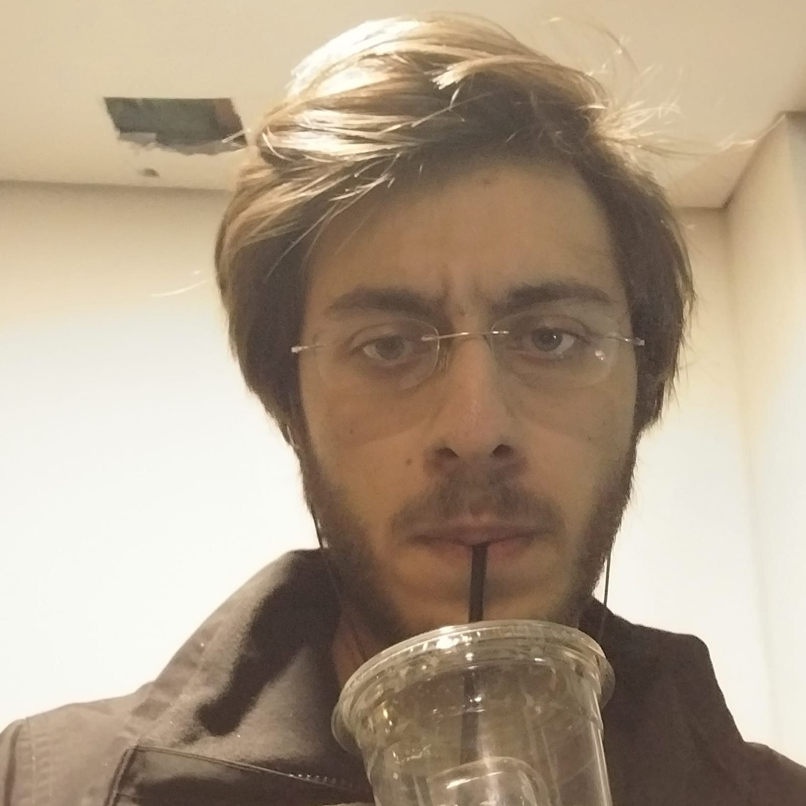

My Resume
Enes Köseahmetoğlu

Experience:
- Summer Software Engineering Intern Summer Software Engineering Intern @Aygaz A.Ş. from july 2023 to august 2023
- Co-president of chess society club of Koç University till june 2023
- Teaching assistant for Eyüboğlu High School students, preparing them for national math exams till 2021
- Assistant at HKTM, was involved in the research and development of some TÜBİTAK projects, 4 weeks, 2018
Education:
- Koç University, Math 2021-2025
- Koç University, Computer Engineering 2022-2026
- Eyüboğlu Science High School 2016-2021
- Sabancı University Summer School for high school students, 2018
Projects:
- "Kümelerde Şartlı Alt Küme Bulma Formülü"
- "Alt Küme ve Aritmetik Dizi bir arada"
(This was chosen as "50. TUBITAK Research Projects Competition Region Finalist)
Voluntary Work:
- I planted trees to support "TEMA Vakfı"
Honors and Awards:
- (5 Time) 1. Place Finish (individually) at Turkish Online Chess 1. League Intercollegiate Battle, Blitz Chess organized by İTU Chess Club
- Eyüboğlu Science High School 2020-2021 Math Award, Given once a year to a chosen graduating student
- Member of the High School ASMA Math Contest Team and High School Math Olympiad Team
Exam Results:
- Tubitak National Mathematics Olympiad Exam 57th place, High School (top 50-55 qualifies for national training camp)
- Turkey Intelligence Foundation Championship, 3rd place at 12th Grade (team competition with a team of 2)
- Mafetya 37th place(Math and Science Exam for middle school students, Turkey)
- International Mathematics Kangaroo Competition Final Exam 57th place, Turkey
- Asma Math Contest tied for 1st place(competition between various high schools, team event with teams of 8)
contact
more